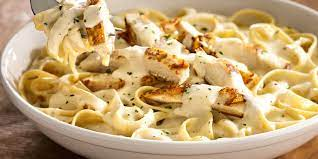

Chicken Fettucine Alfredo Recipe

Descriptioin
A delicious chicken alfredo recipe that the family is sure to love
- Kosher salt
- Freshly ground black pepper
- 12 ounces fettuccine
- Olive oil, for tossing
- 12 ounces bonless, skinless chicken breast
- 1 stick unsalted butter
- 2 cups heavy cream
- 2 pinches freshly grated nutmeg
- 1 1/2 cups freshly grated Parmigiano-Reggiano
- Bring a large pot of water to a boil, and salt generously. Add the pasta and cook according to package directions until al dente (tender but still slightly firm). Drain and toss with a splash of oil.
- Meanwhile, slice the chicken and 1/4 inch-thick strips, and lay them on a plate or a sheet of waxed paper. Season with salt and pepper
- Heat a large skillet over medium heat. Add 2 tablespoons of the butter. When the butter melts, raise the heat to medium-high and add the chicken in one layer. Cook, without moving the pieces, until the underside has browned, 1 to 2 minutes. Flip the pieces, and cook until browned and cooked through, 2 to 3 minutes more. Transfer the chicken to a medium bowl
- Reduce the heat to medium. Add the remaining 6 tablespoons butter. Scrape the bottom of the skillet with a wooden spoon to release any browned bits. When the butter has mostly melted, whisk in the cream and nutmeg and bring to a simmer, then cook for 2 minutes. Lower the heat to keep the sauce just warm.
- Whisk the Parmigiano-Reggiano into the sauce. Add the chicken and cooked pasta and toss well. Season with salt and pepper. Serve hot in heated bowls.